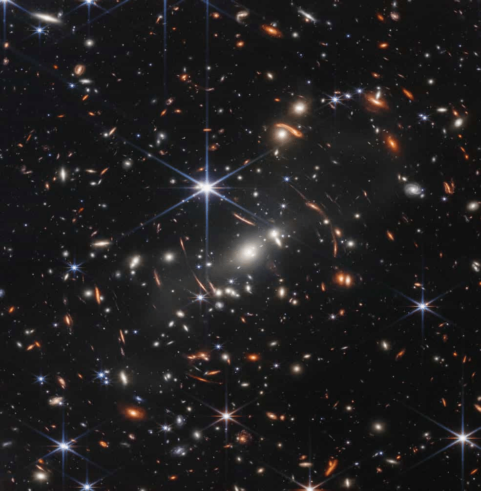
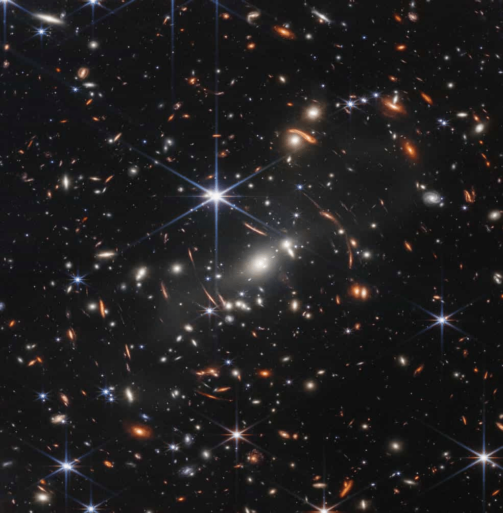
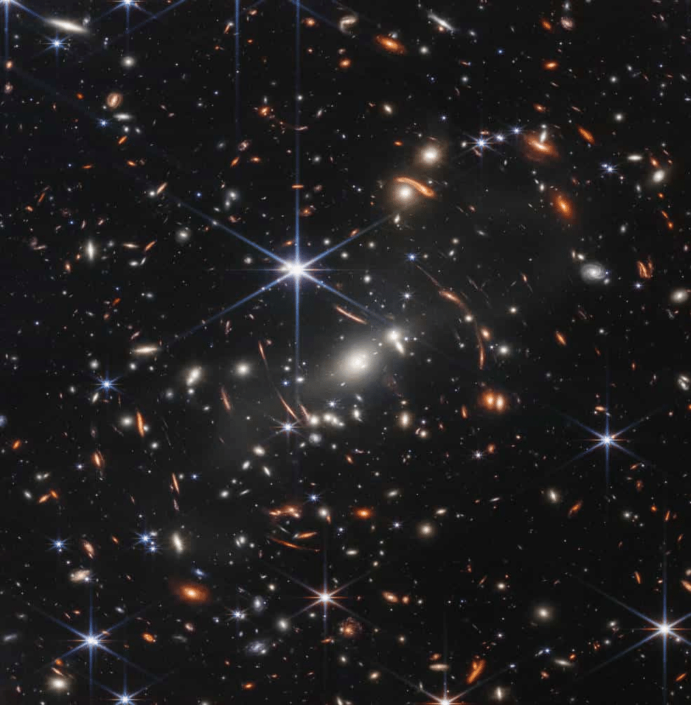

Galeria
Primeiras imagens registradas pelos James Webb!

 

Telescópio Espacial James Webb é um telescópio espacial desenvolvido em conjunto pela NASA, a ESA e a CSA, com a finalidade de colocar no espaço um observatório para captar a radiação infravermelha. O telescópio pode observar a formação das primeiras galáxias e estrelas, estudar a evolução das galáxias e ver os processos de formação das estrelas e dos planetas.
Um olhar para além do tempo!
A missão primária do JWST é a de examinar a radiação infravermelha resultante da grande expansão (Big Bang) e realizar observações sobre a infância do Universo. Para realizar tais estudos com uma sensibilidade sem precedentes, todo o Observatório é mantido frio, e as grandes fontes de interferência de infravermelho como o Sol, a Terra e a Lua são bloqueados.
Para conseguir tal feito, o JWST tem um grande escudo solar dobrável metalizado, que se abriu no espaço e bloquea todas essas fontes de irradiação de infravermelho; aliado a um sistema de resfriamento com uso de radiadores. O tempo nominal de missão e observações do telescópio é de cinco anos, com o objetivo de que chegue a dez anos. A missão planejada de cinco anos se iniciará após uma fase de comissionamento e ajustes de seis meses.
O Telescópio Espacial James Webb tem quatro objetivos principais:
★ Pesquisar a luz das primeiras estrelas e galáxias que se formaram no Universo após o Big Bang.
★ Estudar a formação e evolução das galáxias.
★ Entender a formação de estrelas e sistemas planetários.
★ Estudar os sistemas planetários e as origens da vida.
Lançamento do James Webb a bordo do Ariane 5. O lançamento (designado "Ariane flight VA256") ocorreu no dia 25 de dezembro de 2021, em um foguete Ariane 5 no Centro Espacial de Kourou, na Guiana Francesa. Após o sucesso do lançamento, o administrador da NASA, Bill Nelson, afirmou que este é "um grande dia para o planeta Terra". 31 minutos após o lançamento, o telescópio iniciou o processo de implantação de seus painéis solares, antena, escudo solar, espelho e braço, que deverá se estender por treze dias.
O JWST opera em uma órbita de halo, circulando em torno de um ponto no espaço conhecido como ponto Sol-Terra L2 Lagrange, aproximadamente 1 500 000 km além da órbita da Terra ao redor do Sol. Sua posição real varia entre cerca de 250 000 km e 832 000 km de L2 enquanto orbita, mantendo-o fora da sombra da Terra e da Lua. Esse arranjo mantém a temperatura da espaçonave constante e abaixo dos 50 K (-223 °C) necessários para observações infravermelhas fracas.
O protetor solar JWST é um sistema de controle térmico passivo implantado após o lançamento para proteger o telescópio e a instrumentação da luz e do calor do Sol, da Terra e da Lua. Sua finalidade é permitir que o telescópio infravermelho funcione em ou abaixo de sua temperatura de projeto de 40 kelvins (-233 °C). O telescópio, portanto, usa um grande protetor solar para bloquear a luz e o calor do Sol, da Terra e da Lua, e sua posição perto do Sol-Terra L2 mantém todos os três corpos no mesmo lado da espaçonave o tempo todo. O protetor mantém uma temperatura estável para as estruturas no lado escuro, o que é fundamental para manter o alinhamento preciso dos segmentos do espelho primário no espaço.
Os três principais módulos de instrumentos do telescópio são:
O ISIM é um sistema todo distribuído que consiste em um módulo criogênico que é integrado com o OTE e com os software, circuitos de processadores e demais instrumentos eletrônicos, localizados na parte quente do SSM.
As discussões de uma continuação do Hubble começaram na década de 1980, mas um planejamento sério começou no início da década de 1990. O painel UV-Optical in Space da National Academies de 1990 deu impulso ao conceito ao recomendar um telescópio espacial resfriado de 6 metros como sucessor do Hubble. O desenvolvimento de um conceito de Telescópio Espacial de Próxima Geração de 8 metros (NGST) nos próximos dois anos se concentrou em um telescópio visível e infravermelho resfriado, uma vez que ficou claro que era tecnicamente impraticável incluir os recursos de UV.
Em 1993, o Space Telescope Institute Council (STIC) nomeou um comitê para estudar as missões de astronomia espacial do século 21 e dois anos depois, o comitê recomendou um telescópio de 4 m – menor do que o NGST de 8 a 10 metros inicialmente discutido, mas mantendo a capacidade muito importante de ver a luz infravermelha. Mais tarde, a NASA restaurou o NGST para 8 metros.
Basicamente, o conceito de telescópio Hi-Z foi desenvolvido entre 1989 e 1994: um telescópio infravermelho totalmente descoberto de 4 metros de abertura que retrocederia para uma órbita em 3 unidades astronômicas. Esta órbita distante teria se beneficiado da redução do ruído de luz da poeira zodiacal. Outros planos iniciais exigiam uma missão do telescópio precursor do NEXUS.
A correção da ótica defeituosa do Telescópio Espacial Hubble em seus primeiros anos desempenhou um papel significativo no nascimento do JWST. Em 1993, a NASA preparou o STS-61, a missão do ônibus espacial que levaria um substituto para a câmera do HST e um adaptador para seu espectrógrafo de imagem para compensar a aberração esférica em seu espelho primário.
Em 2002, o projeto foi renomeado em homenagem ao segundo administrador da NASA (1961 – 1968) James E. Webb. Webb liderou a agência durante o programa Apollo e estabeleceu a pesquisa científica como uma atividade central da NASA. Em 2003, a NASA concedeu à TRW o contrato principal de US$ 824,8 milhões para o JWST. O JWST é um projeto da NASA, com colaboração internacional da Agência Espacial Européia (ESA) e da Agência Espacial Canadense (CSA), que ingressaram formalmente em 2004 e 2007, respectivamente.
O projeto exigia um espelho primário de 6,1 metros e uma data de lançamento de 2010. Mais tarde naquele ano, a TRW foi adquirida pela Northrop Grumman e se tornou a Northrop Grumman Space Technology.
O desenvolvimento foi gerenciado pelo Goddard Space Flight Center da NASA em Greenbelt, Maryland, com John C. Mather como cientista do projeto. O contratante principal foi a Northrop Grumman Aerospace Systems, responsável pelo desenvolvimento e construção do elemento da espaçonave, que incluiu o barramento de satélite, protetor solar, Deployable Tower Assembly (DTA) que conecta o Elemento do Telescópio Óptico ao barramento da espaçonave, e o Mid Boom Assembly (MBA), que ajuda a implantar os grandes pára-sóis em órbita, enquanto a Ball Aerospace & Technologies foi subcontratada para desenvolver e construir o próprio OTE e o Integrated Science Instrument Module (ISIM).
Depois de cumprir o principal marco de alinhar o telescópio ao NIRCam em março de 2022, a equipe do Webb começou a estender o alinhamento do telescópio ao guia (o Sensor de Orientação Fina, ou FGS) e aos outros três instrumentos científicos. Nasa chamou esse processo de seis semanas de alinhamento multi-instrumento multicampo (MIMF).
Primeiras imagens registradas pelos James Webb!

Para não perder nada, cadastre seus dados!